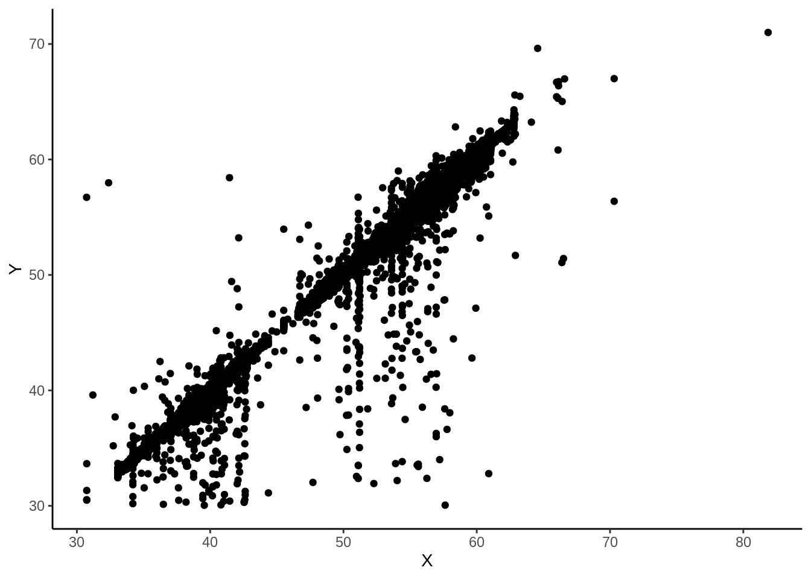

Considere a variável Clinker PV e a variável Clinker SP dos dados do moinho de cimento referentes ao mês de agosto de 2019, onde a variável Clinker é uma mistura de vários produtos que são necessário para a produção de cimento, PV(variável de processo) é o real valor que o moinho recebe naquele exato momento e SP(set point) o valor que está programado. Vamos assumir que y represente a variável Clinker PV (variável resposta) e x represente a variável Clinker SP (variável independente). Vamos considerar os valores das variáveis observados em um período de vinte dias, considerando intervalos entre as coletas de três horas (3h). Essas dados são coletados a cada 30min, no entanto esses valores podem conter uma dependência ao longo do tempo, que pode ser amenizada considerando um intervalo maior entre as coletas.

Note que parece existir uma associação entre as a variáveis, pois a medida que x aumenta, a variável y parece tender a também aumentar. Se a relação existe, em geral, é desejado saber qual é a função que pode descrever o relacionamento. Neste caso, pode-se fazer a suposição inicial de que esta função seja uma reta, ou seja, pode-se supor que um modelo de regressão linear seja apropriado. Assim, o interesse é aproximar os dados a melhor reta possível, para tentar prever o comportamento da variável x em função de y.
Com a finalidade de mostrar a função da reta que melhor decreve os dados deve-se fazer a aproximação dos betas, que seguem as seguintes funções: \[\hat{\beta_0} = \frac{n \cdot \sum x_iy_i-\sum x_i \cdot \sum y_i}{n \cdot \sum x_i^2 -( \sum x_i)^2}\] \[\hat{\beta_1} = \overline{y}-\hat{\beta_0}\cdot\overline{x}\] Para aproximação do \(\beta_1\) será necessário o valor das medias amostrais, que serão expressa pelas seguintes fórmulas: \[\overline{x} = \frac{\sum x_i}{n}\]
\[\overline{y} = \frac{\sum y_i}{n}\]
A covariância e o coeficiente de correlção será necessária para saber se existe uma relação linear entre os dados, para poder ultilizar o método da reta de regressão. Se a covariância for negativa significa que os dados tem uma tendência decrescente, caso contrário a tendência será crescente e se a covariância for zero, não existe nenhuma tendência linear.
A fórmula abaixo é utilizada para calcular a covariância amostral.
\[s_{xy}=\frac {\sum^{n}_{i=1}x_i\cdot y_i - \frac{(\sum^{n}_{i=1}x_i)(\sum^{n}_{i=1}y_i)}{n}}{n-1}\]
O coeficiente de correlção é expresso pela seguinte fórmula. Onde \(s_x\) e \(s_y\) são os desvios padrões e o valor de \(r\) está entre 1 e -1, quanto mais próximo de 1 ou -1, mais linear é a relação entre as variáveis x e y. Se \(r\) for positivo quando uma variável cresce a outra também irá crescer, e se for negativo quando uma cresce a outra diminui e se for 0 significa que x e y não tem correlção linear.
\[r_{xy}=\frac{s_{xy}}{s_x\cdot s_y}\]
Como já foi citado o modelo de regressão linear irá descrever uma relação de uma varável y com uma variável x que será expressa por uma reta. O erro é representado pela letra grega \(\epsilon\), podemos fazer uma análise residual(verificar independência das variáveis) com um intuito de encontrar betas que minimizem os erros. \[y = \beta_0 + \beta_1 + \epsilon\] Outra forma de aproximar os betas é através da covariância seguindo as fórmulas: \[\hat{\beta_1} = \frac{s_{xy}}{s_x^2}\] \[\hat{\beta_0} = \frac{\sum^{n}_{i=1}y_i-\hat{\beta_1}\cdot \sum^{n}_{i=1}x_i}{n}\]